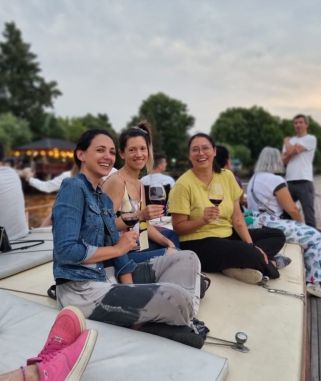
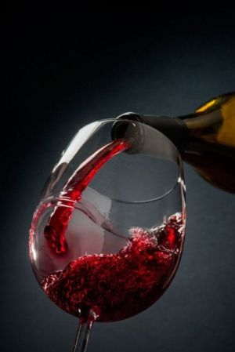
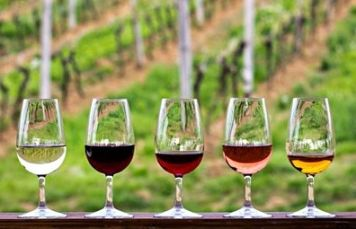

Nosotros
Nuestra historia
Nosotros somos personas apasionadas por la vitivinicultura y entonce Baires Wines nace como una propuesta para compartirte todo lo que sentimos cuando probamos una copa de la mejor cosecha. Nuestro emprendimiento nace en el verano de 2021, cuando un grupo de amigos se subió en un barco a recorrer un rio mientras llevaban un vino para compartir. Desde entonces Baires Wines se dedica a ser esto que somos


